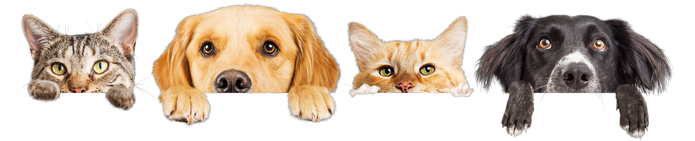

¿Sabías que?
Los gatos pueden rotar sus orejas 180 grados. Los gatos pueden pasar hasta 14 horas dormidos. Debido a su naturaleza nocturna, los gatos suelen ser mucho más hiperactivos en la tarde. La audición del gato promedio es al menos cinco veces más aguda que la de un adulto humano. Los gatos pueden rotar sus orejas 180 grados. Los gatos pueden pasar hasta 14 horas dormidos. Debido a su naturaleza nocturna, los gatos suelen ser mucho más hiperactivos en la tarde. La audición del gato promedio es al menos cinco veces más aguda que la de un adulto humano.